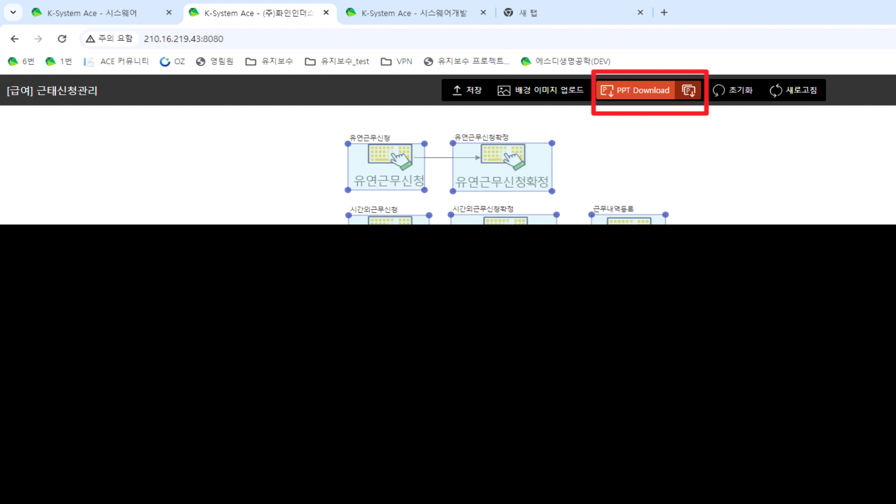
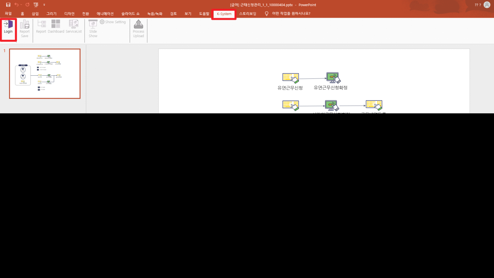
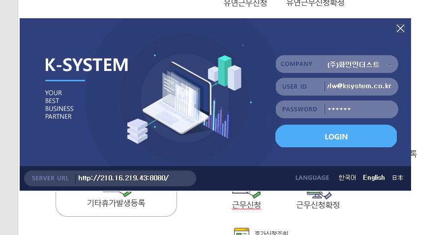

프로세스맵 복사 생성
- 설치파일 다운로드
\<\<Setup.zip>>

- PPT 다운로드

- K-System - Login (편집 사용 안되어있으면 설정)

- 좌측 하단 : ERP 경로 입력 (http:// 포함)
ERP 아이디 입력
비밀번호는 아무렇게 입력해도 가능하다

- 신규 프로세스 생성
- PPT 파일에 해당 키값을 신규 프로세스의 키 값으로 설정
\<\<Setup.zip>>


ERP 아이디 입력
비밀번호는 아무렇게 입력해도 가능하다
